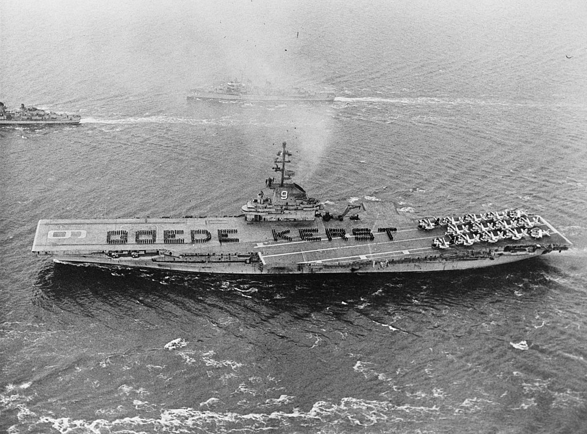
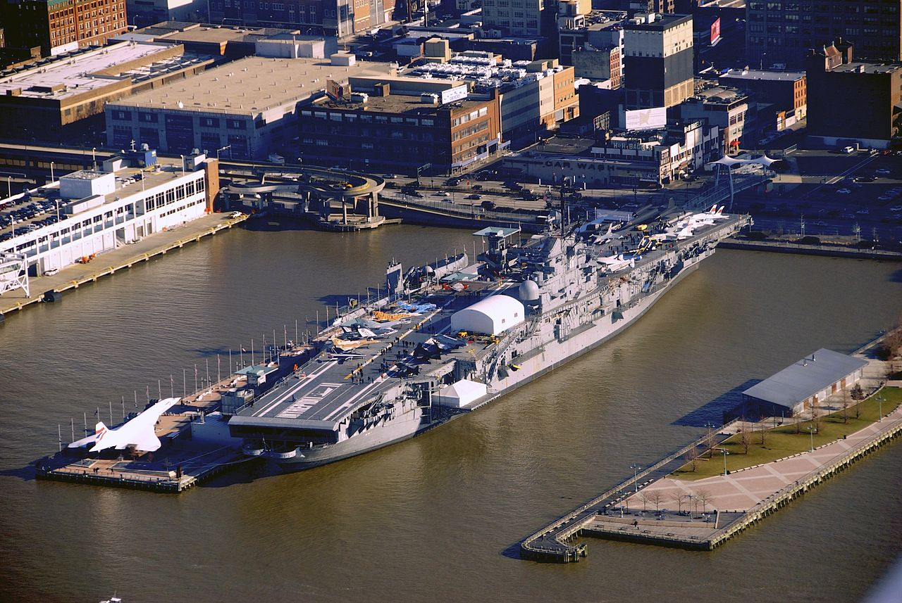
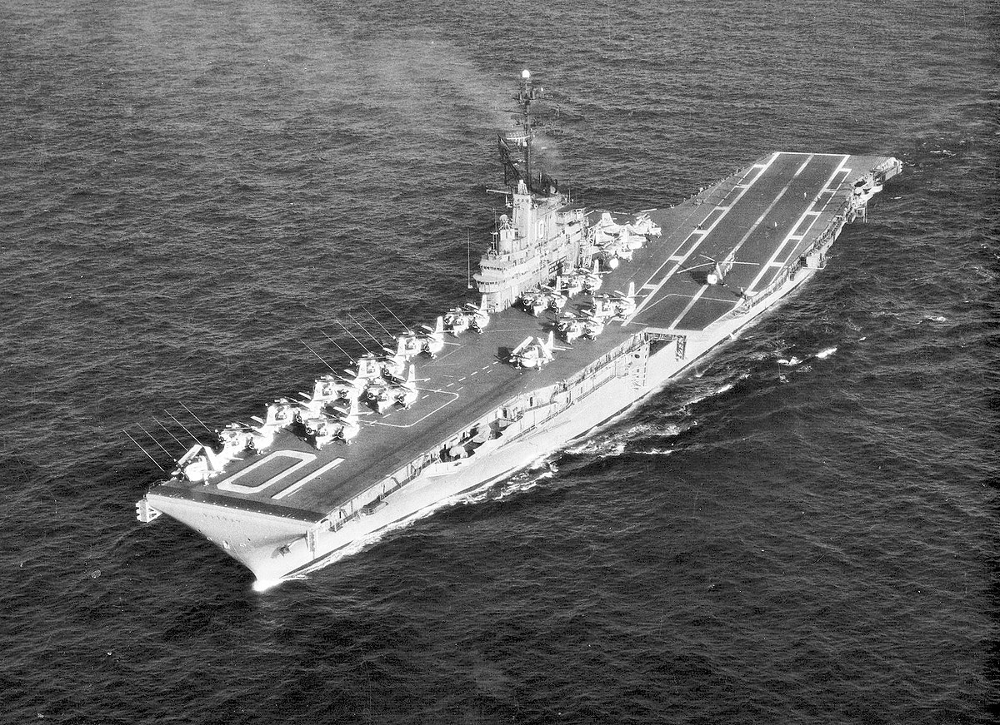

L'USS Yorktown est un porte-avions de l'US Navy de la Seconde Guerre mondiale, premier de sa classe.
Troisième navire de guerre américain à porter ce nom, l'USS Yorktown est un porte-avions de 19 800 tonnes. Il porte le numéro de coque CV-5.
Deux semaines après l'attaque japonaise à Pearl Harbor, le Yorktown transite par le Canal de Panama pour renforcer la flotte du Pacifique qui se trouve en mauvaise posture.
Tout de suite après, le porte-avions fait route vers le Pacifique Sud, où il participe à une série de raids et d'opérations dont le point culminant est la bataille de la mer de Corail au début du mois de mai.
Les avions du Yorktown ont attaqué deux porte-avions japonais, le Shōhō, qui fut coulé, et le Shōkaku, qui fut gravement endommagé.
De rapides réparations à Pearl Harbor lui permettent de participer à la bataille de Midway, les 4, 5 et 6 juin 1942.
Ce sont pourtant des attaques successives des bombardiers et des avions lance-torpilles du Hiryu qui auront raison du Yorktown, qui sera abandonné dans l'après-midi du 4 juin.
Deux jours plus tard, alors que les opérations de sauvetage sont en cours, le sous-marin japonais I-168 coule l'USS Hammann et le porte-avions endommagé, le premier immédiatement et le second peu après le lever du jour le 7 juin.
L'épave du Yorktown a été découverte et photographiée en mai 1998 par cinq mille mètres de fond, par l'océanographe Robert D. Ballard.
Malgré les quelque 56 ans qu'elle a passés à cette grande profondeur (supérieure à celle à laquelle se trouve le Titanic), elle est extrêmement bien conservée.
Longueur : 246,73 mètres
Maître-bau : 33,22 m (au pont d’envol)
Tirant d'eau : 6,62 m (à pleine charge)
Déplacement : 19 800 tonnes, 25 500 t en charge
Propulsion : 4 lignes d’arbres, turbines à engrenages
Puissance : 120 000 ch
Vitesse : 33 nœuds
Le USS Enterprise (CV-6), surnommé Big E, était le sixième porte-avions de la marine des États-Unis et le septième navire américain portant ce nom.
Lancé en 1936, c'était un navire de la classe Yorktown, et l'un des trois porte-avions américains mis en service avant la Seconde Guerre mondiale à survivre à la guerre.
Il a participé à plus d'opérations de la guerre contre le Japon que n'importe quel autre navire américain. Ces actions incluent le raid de Doolittle sur Tokyo, la bataille de Midway, la bataille des Salomon orientales, la bataille des îles Santa Cruz et d'autres engagements air-mer au cours de la bataille de Guadalcanal, la bataille de la mer des Philippines et la bataille du golfe de Leyte.
À trois reprises au cours de la guerre du Pacifique, le Japon a annoncé à tort que le navire avait été coulé. Cela est bien-sûr FAUUUXXX ^^
On lui a donné plusieurs surnoms comme Big E, Lucky E ou encore The Grey Ghost du fait de sa puissance pendant la seconde Guerre!!
L'USS Enterprise a reçu de nombreuses distinctions dont le nombre record de vingt Battle stars lors de la Seconde Guerre mondiale, une Navy Unit Commendation ou encore la Presidential Unit Citation
L’Enterprise est entré dans le New York Navy Yard le 18 janvier 1946 et a été placé hors service le 17 février 1947. En 1946, il devait être remis à l'État de New York comme navire musée, mais ce plan a été annulé en 1949.
Des tentatives ultérieures ont été faites à préserver le navire comme un musée ou un mémorial, mais il n'y eut pas suffisamment d'argent récolté pour racheter le navire, et le « Big E » a été vendu le 1er juillet 1958 à la Lipsett Corporation de la ville de New York pour sa démolition à Kearny dans le New Jersey.
Une promesse a été faite de sauvegarder le pied distinctif du mât pour l'exposer dans le nouveau stade de football américain de l'Académie navale d'Annapolis le Navy-Marine Corps Memorial Stadium , mais elle ne fut pas tenue et à la place, une plaque a été installée sur un bâtiment qui est encore appelée « Enterprise Tower ».
Longueur : 246 mètres (hors tout)
Maître-bau : 33,45 m
Tirant d'eau : 8,14 m
Déplacement : 20 700 tonnes Washington
Refonte en 1943 : 29 078 tonnes en pleine charge
Propulsion : 9 chaudières Babcock & Wilcox, 4 turbines Parsons, 4 hélices
Emport de mazout : 4 814 t
Puissance : 120 517 ch (90 MW)
Vitesse : 32,5 nœuds (60,2 km/h)
33,65 nœuds (62,3 km/h) (essais)
L’USS Hornet (CV-8) est un porte-avions américain, quatrième et dernier de la Classe Yorktown. Il est entré en service en 1941.
Le Hornet s'est rendu célèbre lors de sa première mission le 18 avril 1942 en lançant les seize bombardiers B-25 Mitchell qui allaient réaliser le premier raid aérien sur Tokyo, dit raid de Doolittle. Décollant du pont, les avions bombardèrent Yokohama et Tokyo avec pour objectif de poursuivre jusqu'à des terrains d'aviation de Chine.
Pendant la bataille des îles Santa Cruz, l'USS Hornet fut la principale cible des attaques japonaises.
En 15 minutes, le navire américain est frappé par trois bombes d'un Aichi D3A « Val », puis ce sont les Nakajima B5N qui l'attaquèrent et endommagèrent les systèmes des moteurs électriques. Deux bombardiers en piqué « Val » endommagés s'écrasèrent volontairement sur le porte-avions : un à bâbord près de la proue, et l'autre sur l'îlot, tuant 7 personnes et répandant son carburant sur le pont.
Le contre-amiral George D. Murray appela le croiseur lourd USS Northampton pour tenter de remorquer le Hornet endommagé.
Ce fut chose faite à une vitesse d'environ cinq nœuds (9 km/h). Les équipes de réparation étaient sur le point de rétablir les moteurs lorsqu'une nouvelle salve de neuf avions torpilleurs l'attaquèrent de nouveau.
Huit appareils furent abattus ou ne le touchèrent pas, seul un toucha sa cible du côté tribord : ce fut le coup fatal, la torpille détruisit la réfection du système électrique et provoqua une gîte de 14°.
Après avoir été informé de l'approche de nouvelles forces japonaises et que les efforts de remorquage ont été vains, le vice-amiral William F. Halsey donna l'ordre d'évacuer le navire.
Bien que gravement endommagé et sans équipage, l'USS Hornet restait toujours à flot.
Ce sont finalement les destroyers japonais Makigumo et Akigumo qui à 22 h 40 l'achèvent à l'aide de quatre torpilles.
L'USS Hornet coula le 27 octobre à 1 h 35. La perte du porte-avions coûta la vie à 140 marins.
Il est rayé du registre des navires le 13 janvier 1943.
Cependant, son nom sera ressuscité moins d'un an plus tard lorsque l'un des nouveaux porte-avions de la classe Essex en cours de construction (le 12e porte-avions américain) sera baptisé USS Hornet avant sa mise à l'eau en 1943 : l'USS Hornet (CV-12). Celui-ci sera l'un des principaux porte-avions américains pour le reste de la guerre du Pacifique.
Longueur : 252,20 m
Maître-bau : 35 m
Tirant d'eau : 8,50 m
Déplacement : 29 581 t (max)
À pleine charge : 34 881 tonnes
Propulsion : 4 arbres d'hélices
4 turbines à réduction par engrenages Westinghouse
8 chaudières
Puissance : 150 000 ch
Vitesse : 32,5 nœuds (60 km/h)
L'USS Essex CV-9 après refonte SCB-125
L’USS Essex (CV/CVA/CVS-9) était un porte-avions de la marine des États-Unis pendant la Seconde Guerre mondiale, essentiellement dans l'océan Pacifique.
L'Essex fut lancé le 31 juillet 1942 depuis les chantiers de Newport News Shipbuilding et fut déclaré opérationnel en octobre de la même année.
Il participa depuis cette date à la campagne du Pacifique.
Le 25 novembre 1944, il fut touché au niveau du pont d'envol, plein d'avions prêts à décoller, par un Kamikaze, causant d'importants dommages ainsi que la mort de 14 marins, en blessant 44 autres.
Il fut retiré du service en janvier 1947 et subit un important chantier de rénovation (SCB-27A) entre 1949 et 1951 où il reçut des catapultes hydrauliques.
Il reprit du service en 1951 pendant la Guerre de Corée. Il fut le premier porte-avions à déployer le F2H Banshee en opération.
En 1955, le CV-9 Essex fut modifié (SCB-125) et reçut un pont oblique et en 1962 fut remis en cale sèche afin de subir d'importantes modifications
Il sera retiré du service 30 septembre 1969
Il fut le quatrième navire de la marine américaine à porter ce nom. Il fut la tête de série de la plus importante classe de porte-avions jamais construite à ce jour (2010).
Longueur : 270,66
Maître-bau : 30,60
Tirant d'eau : 9,14
Port en lourd : de 37 500 tonnes
Propulsion : 8 chaudières, 4 groupes de turbines, 4 hélices
Puissance : 150 000 ch
Vitesse : 33 nœuds
L’USS Hornet (CV-12/CVA-12/CVS-12) est un porte-avions de la classe Essex de la marine des États-Unis. Huitième navire américain à porter ce nom, il a été mis à l'eau en 1943 après une construction éclair (16 mois entre la pose de la quille et sa prise d'armement, ou commissionnement).
Le CV-12 Hornet a eu la période d’essai la plus courte de tous les porte-avions de l’US Navy (15 jours). Pendant plus de 18 mois, il ne touche jamais terre, constamment déployé en première ligne.
En 1955, il subit plusieurs modifications, dont la pose d'un pont oblique.
Dans les années 1960, il est mobilisé dans la guerre du Viêt Nam.
Les 24 juillet et 24 novembre 1969, dans le Pacifique, il sert à récupérer les capsules spatiales Apollo 11 et Apollo 12 et leurs équipages, qui viennent d'effectuer les tout premiers débarquements de l'Homme sur la Lune.
Le 26 juin 1970, il est retiré du service.
En 1991, il est élevé au rang de National Historic Landmark puis, en 1999, de State Historic Landmark.
Depuis 1998, il est ouvert au public à Alameda, en Californie.
Longueur : 266 m
Maître-bau : 45 m
À pleine charge : 34 881 tonnes
Propulsion : 4 arbres d'hélices
4 turbines à réduction par engrenages Westinghouse
8 chaudières
Puissance : 150 000 ch
Vitesse : 33 nœuds (61 km/h)
L'USS Intreprid CV-11 après modérnisation en 1957 est désomer à quai (quai 86) en tant que musée
L’USS Intrepid (CV-11) est un porte-avions de classe Essex de l’United States Navy. Il fut mis en service le 16 août 1943 et il est le quatrième navire de l’US Navy à porter ce nom.
Il participa à la Seconde Guerre mondiale dans le théâtre du Pacifique, ainsi qu'à la guerre du Viêt Nam.
En outre, il fut navire récupérateur pour les missions spatiales des programmes Mercury et Gemini de la NASA.
Après des exercices d'entraînement, l’Intrepid fut choisi comme navire principal de l'équipe de récupération de l'astronaute Scott Carpenter et sa capsule spatiale Mercury-Atlas.
D'avril à octobre 1971, l’Intrepid prit part à des exercices de l'OTAN, et passa par les ports de Lisbonne, Plymouth, Kiel, Naples, Cannes, Barcelone, Hambourg, Copenhague, Greenock, Rosyth, Portsmouth, et de Bergen.
Après un dernier déploiement en Méditerranée, l’Intrepid fut désarmé le 15 mars 1974.
En 1976, l’USS Intrepid est amarré au Philadelphia Naval Shipyard de Philadelphie et héberge des expositions dans le cadre des célébrations du bicentenaire des États-Unis.
À l'origine amené à être démoli après son retrait du registre de la marine, une campagne menée par le promoteur immobilier Zachary Fisher et l'Intrepid Museum Foundation sauvèrent le porte-avions, et il fut conservé comme navire-musée.
En août 1982, l'Intrepid Sea-Air-Space Museum ouvrit ses portes et quatre ans plus tard, l’Intrepid fut officiellement considéré comme un site historique national.
Au fil des ans, le porte-avions a accueilli de nombreux évènements et même transformé provisoirement en un centre des opérations du FBI après les attentats du 11 septembre 2001.
Au début de juillet 2006, il fut annoncé que l’Intrepid serait l'objet de rénovations et de réparations, ainsi que le quai 86. Il ferma le 1er octobre 2006, en vue de son remorquage à Bayonne dans le New Jersey pour les réparations, et plus tard à Staten Island pour sa rénovation et son amarrage temporaire.
Le 6 novembre 2006, une première tentative de retirer le porte-avions de l'embarcadère pour sa restauration fut temporairement stoppée par l’United States Coast Guard. Malgré l'utilisation de plusieurs remorqueurs, combinant 22 000 kW, le navire resta bloqué en raison de l'accumulation de 24 ans de limon.
Le porte-avions fut remorqué à sa place sur le fleuve Hudson le 2 octobre 2008 et rouvert au public le 8 novembre.
Longueur : 250 m
Maître-bau : 28 m
Tirant d'eau 8,66 m
Déplacement : 27 500 tonnes
Propulsion : 8 chaudières
4 turbines à vapeur Westinghouse
Puissance : 110 MW
Vitesse : 33 nœuds (61 km/h)

L'USS Yorktown CV-10 après modérnisation en 1947
L’USS Yorktown (CV-10) est un porte-avions de la classe Essex appartenant à l'US Navy. Il est nommé en référence à la bataille de Yorktown.
Initialement baptisé Bonhomme Richard, il change de nom en cours de construction et devient le second porte-avions de l’US Navy appelé Yorktown, le premier étant le CV-5 perdu le 7 juin 1942 lors de la bataille de Midway.
Ce second Essex est engagé dans les opérations des îles Gilbert et dans celles de Kwajalein.
Il est présent lors du raid sur Truk, ainsi qu’à Hollandia, aux Mariannes, puis Iwo-Jima où le 18 mars 1945 il est touché par une bombe qui ne l’empêchera pas de demeurer opérationnel.
Mis en réserve en janvier 1947, il est modernisé, devenant CVA-10 en 1953, puis CVS-10 en 1957.
De 1965 à 1968, il est envoyé en Asie pour participer à la guerre du Viêt Nam.
Le 27 décembre 1968, il est chargé de récupérer la capsule d’Apollo 8 et son équipage, qui vient d'effectuer le tout premier vol autour de la Lune.
Il a été définitivement reformer le 1er juin 1973, actuellement navire musé dans la ville Philadelphie dans le Commonwealth !
Longueur : 250 m
Maître-bau : 28 m
Tirant d'eau : 8,66 m
Déplacement : 27 500 tonnes
Propulsion : 8 chaudières
4 turbines à vapeur Westinghouse
Puissance : 110 MW
Vitesse : 33 nœuds (61 km/h)

{kind=link}
{kind=link}
{kind=link}
{kind=link}
{kind=link}
{kind=link}
{kind=link}
{kind=link}
{kind=link}